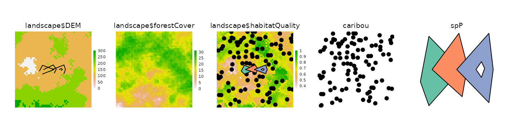
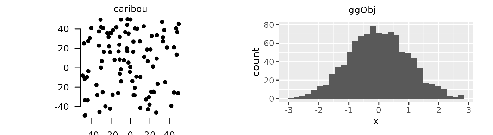
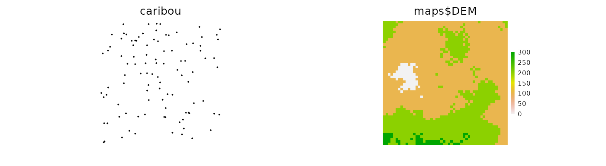
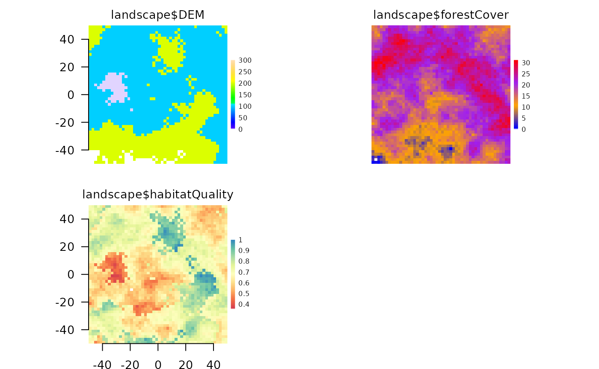
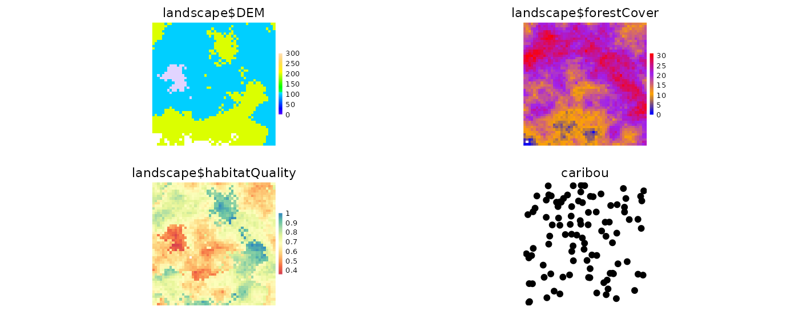
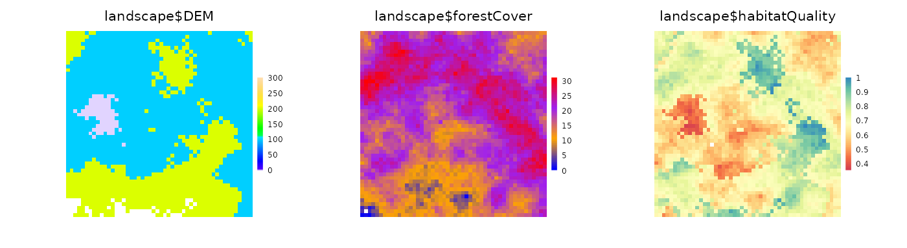
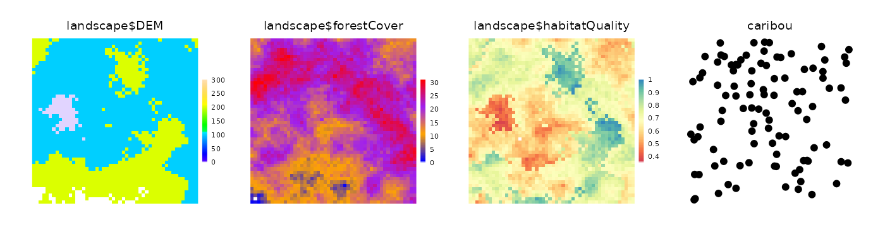
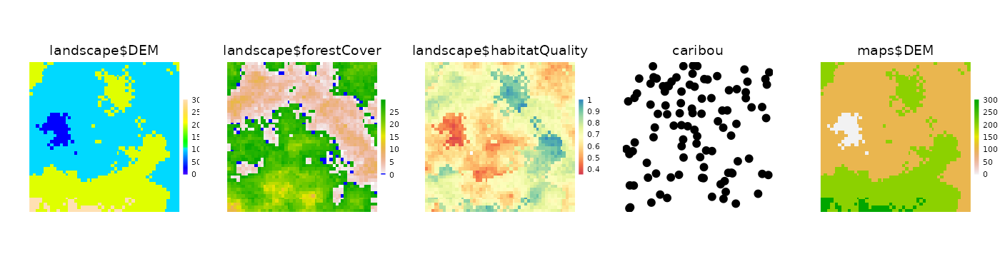
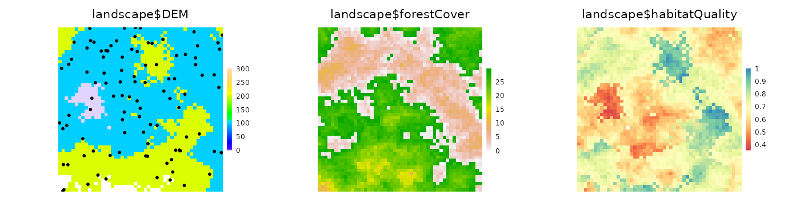

quickPlot
vignettes/iii-plotting.Rmd
iii-plotting.RmdquickPlot
Most visualization approaches in R (e.g., base,
RgoogleVis, ggplot2, rgl) are not
optimized for speed or modularity. Rather, they are designed to build
publication-quality or interactive figures that do not need to be
redrawn hundreds or more times, maybe even in rapid succession. Plotting
requirements for many other uses, including simulation modelling, are
different. Changes to data, maps, objects can happen rapidly and
repeatedly. Visualizing this can be critical, especially during the
model building phase. Furthermore, no plotting method has been designed
for modularity – the ability to plot something without being aware of
what is already there.
quickPlot comes with a plotting function to fulfill
these two gaps. The main plotting function, Plot
(i.e., with a capital P), is built using the
grid package. We have specifically built a plotting system
that allows for relatively fast plotting of rasters (in the
raster package), SpatialPoints,
SpatialPolygons, SpatialLines (all within the
sp package), ggplot objects, histogram, and
igraph (package igraph) objects with the
ability to make multi-frame plots without knowing which plots are
already plotted. In other words, the main plotting function can handle
modular plotting, where each call to Plot adds plots,
without each knowing what the current state of the active plotting
device is. This means that plotting can be treated as modular. The
Plot function is therefore intended to be used as a way to
interact visually especially during development of rapid, repeated
visualizations, such as simulation modelling. If fine tuning and
customization are desired, other plotting tools may be more suited
(e.g., ggplot2, or a dedicated GIS program).
To demonstrate plotting, we first load some maps. These maps are
randomly generated maps that come with the quickPlot
package. In the code snippet below, we create the list of files to load,
which is every file in the maps/ subdirectory of the
package. Then we load that list of files.
# Make list of maps from package database to load, and what functions to use to load them
library(data.table)
library(terra)
library(quickPlot)
# omit forestAge and percentPine maps for simplicity
files <- system.file("maps", package = "quickPlot") |>
dir(full.names = TRUE, pattern = "tif")
filelist <- data.frame(file = files[-c(2, 5) ], stringsAsFactors = FALSE)
print(filelist)## file
## 1 /home/runner/work/_temp/Library/quickPlot/maps/DEM.tif
## 2 /home/runner/work/_temp/Library/quickPlot/maps/forestCover.tif
## 3 /home/runner/work/_temp/Library/quickPlot/maps/habitatQuality.tif
# Load files to memory (using rasterToMemory), assign to a simList we call maps
maps <- lapply(filelist$file, function(x) rast(x))
names(maps) <- sapply(basename(filelist$file), function(x) {
strsplit(x, split = "\\.")[[1]][1]
})
# put into a single stack object in the simulation environment for ease of use below
landscape <- c(maps$DEM, maps$forestCover, maps$habitatQuality)Plot function
There are several features of Plot that are worth
highlighting. A primary purpose of Plot is to plot spatial
type objects; however, as noted below, other object types can also be
plotted. Spatial objects can be layered on top of one another;
non-spatial objects can not.
Specifically, it currently can plot RasterLayer,
RasterStack, SpatialPoints*,
SpatialPolygons*, and SpatialLines* spatial
objects. Because Plot uses the grid graphics
system, changing plot parameters is done with the gp=gpar()
designation. See ?gpar for options.
Plot(landscape, new = TRUE)
# make a SpatialPoints object
caribou <- terra::vect(cbind(x = stats::runif(1e2, -50, 50),
y = stats::runif(1e2, -50, 50)))
Plot(caribou)
Plot(caribou, addTo = "landscape$habitatQuality")
# from ?vect help file
x1 <- rbind(c(-18,-2), c(-14,5.5), c(1, 0), c(-14,-6))
x2 <- rbind(c(-1,0), c(14,6), c(16,0), c(14,-5.5))
x3 <- rbind(c(-12.5,0), c(0,6), c(4,0.5), c(1.5,-4.5))
hole <- rbind(c(8,0), c(10.5,1.3), c(12,0.2), c(10.5,-1.3))
z <- rbind(cbind(object=1, part=1, x1, hole=0), cbind(object=2, part=1, x3, hole=0),
cbind(object=3, part=1, x2, hole=0), cbind(object=3, part=1, hole, hole=1))
colnames(z)[3:4] <- c('x', 'y')
spP <- terra::vect(z, "polygons")
Plot(spP)
Plot(spP, addTo = "landscape$habitatQuality", gp = gpar(lwd = 2))
# from ?vect help file
z[z[, "hole"]==1, "object"] <- 4
sl <- vect(z[,1:4], "lines")
Plot(sl, gp = gpar(col = c("red", "blue"), lwd = 2), addTo = "landscape$DEM")
Any combination of RasterStack,
RasterLayer, SpatialPoints*, and
SpatialPolygons* objects can be plotted from a single
invocation of Plot:
ggplot2 objects
Plot can also handle gg objects as created
with qplot or ggplot. These can be combined
with spatial objects as well.
if (requireNamespace("ggplot2")) {
ggObj <- data.frame(x = stats::rnorm(1e3)) |> ggplot2::ggplot(ggplot2::aes(x = x)) +
ggplot2::geom_histogram()
clearPlot()
Plot(caribou, axes = "L", new = TRUE)
Plot(ggObj)
}## Loading required namespace: ggplot2## `stat_bin()` using `bins = 30`. Pick better value with `binwidth`.
base plotting
Plot can is also a wrapper around
plot.default. The advantage of using Plot is
that you can place individual plots by named area, or have the
Plot function do that automatically. The Plot
function can only handle one of these at a time, unlike the previous
cases. Most arguments that can be passed into plot should
work here. Note, as with other objects passed to Plot,
there must be a way for R to refind the data in order to replot it if a
rearranged windows occurs. To do this, the user can provide a name for
the plot, via addTo argument. If there is not yet an object
with that name, then it will create it. If no addTo is
passed in, then it will give the default, basePlot1,
name.
If using addTo, and there are both x and y arguments, it
will add points to the previous plot.
baseObj <- rnorm(1e3)
baseObj2 <- baseObj * 1.2 + rnorm(1e3)
clearPlot()
# Plot(baseObj, axes = "L", ylab = "Something meaningful")
Plot(baseObj, baseObj2, addTo = "scatterplot", axes = TRUE)
newPoints <- rnorm(10)
newPoints2 <- newPoints * 1.2 + rnorm(10)
Plot(newPoints, newPoints2, addTo = "scatterplot", col = "red")We likely won’t want the default colours for every map. There are two
ways to change the colour of a map: by adding a colortable
to a Raster* object (e.g., using the
setColors function in quickPlot), or using the
cols argument of the Plot function. Adding a
colortable to a Raster* will be more
persistent (i.e., it will stay with the same colour table even
if the device is wiped clean or a new device is created. Every
RasterLayer can have a colortable, which gives
the mapping of raster values to colours. If not already set in the file
(many .tif files and other formats already have their
colortable set), we can use setColors(Raster*)
with a named list of colours, if a RasterStack, or just a
vector of colours if only a single RasterLayer. These can
be easily built with the RColorBrewer package, with the
function brewer.pal(), colorRampPalette(),
heat.colors(), or just a character vector of colours that
will be interpolated. Note that overplotting (accomplished with
addTo=) will not overplot the legend; in general,
overplotting should be used for cases where the maps are compatible with
the underlying map layer. See overplotting below.
zero.color is an optional string indicating the colour
for zero values, when zero is the minimum value, otherwise, it is
treated as any other colour. The default is NULL. Use
"white" or another colour if this default is not
desired.
na.color is an optional string indicating the colour for
NA values. The default is transparent. Use
"white" or another colour if this default is not desired.
See text about na.color below after raster values have
changed.
# can change colour palette
clearPlot()
Plot(landscape) # original
# can use RColorBrewer if installed
habQualCols <- if (requireNamespace("RColorBrewer")) {
RColorBrewer::brewer.pal(9, "Spectral")
} else {
colorRampPalette(c("blue", "purple"))(9)
}
mapColours <- list(
DEM = topo.colors(50),
forestCover = colorRampPalette(c("blue", "orange", "purple", "red"))(50),
habitatQuality = habQualCols
)
setColors(landscape, n = 50) <- mapColours
Plot(landscape, new = TRUE) # oh, how pretty!Plot arguments
grid graphical parameters: gp,
gpText, gpAxis, size
These parameters will specify plot parameters that are available with
gpar(). gp will adjust plot parameters,
gpText will adjust the title and legend text only,
gpAxis will adjust the axes only. size adjusts
point size in a SpatialPoints object. Multiple entries can
be used, but they must be passed as list elements and they will be
matched to the ... items to plot.

visualSqueeze
Under most circumstances, the plotting regions will be automatically
scaled to maximize the area taken by the map layers, minimizing white
space, but allowing axes, legends and titles to be visible when they are
plotted. In some devices and some situations, this automatic scaling is
imperfect, so axes or legends may be squished. The
visualSqueeze argument is an easy way to shrink or grow the
plots on the device. The default value is 0.75 representing ~75% of the
area. If the plots need to be slightly smaller, this could be set to
0.6; if they can be larger, visualSqueeze could be set to
0.8. visualSqueeze is 1 for fully filled device.
A key reason why the legends or axes are cut off sometimes is because
there is a minimum threshold for font size for readability. So, either
visualSqueeze can be set or making a larger device will
usually also solve these problems.
legend and legendRange
legend is a logical indicating whether a legend should
automatically be added (the default). legendRange will
allow overriding of the default automatic legend creation. This is
useful in situations where, say, an version of a raster at the initial
stage of a simulation does not cover the range of the eventual values of
that raster. Since the default is to automatically scale the legend to
the values contained in the raster at the first time it is drawn, the
legend will not cover the whole necessary range. Adding
legendRange = 0:20, where 0:20 covers the
expected range of all stages of that raster, will work.
zoomExtent
A plot can be made with a custom zoom. This can either be done by
cropping the object, or by doing a Plot call, passing an
extent object via zoomExtent. A common way of using this
would be to initially Plot an object, then use
clickExtent, assigning the new extent to an object. Then
call Plot(obj, zoomExtent=newZoom). This new zoom will
persist with rearrangements.
One of the main purposes of the Plot function is
modularity. The goal is to enable any SpaDES module to be
able to add a plot to the plotting device, without being aware of what
is already in the plotting device. To do this, each open plotting device
has a corresponding .quickPlot object in the
.quickPlotEnv, that gets created when a first Plot function
is called. This object keeps the layer names, their extents, and whether
they were in a RasterStack (and a few other things). So,
when a new Plot is called, and new is used,
then it will simply add the new layer. There may not be space on the
plot device for this, in which case, everything will be replotted in a
new arrangement, but taking the original R objects. This is different
than the grid package engine for replotting. That engine was not
designed for large numbers of plots to be added to a region; it slows
down immensely as the number of plots increases.
new argument
The new argument wipes the individual plots that are
being added to (via addTo explicitly or implicitly because
it is the same object name as a current plot), and plots the new object
or base plot in the stead of the old one. This can be used for changing
any Plot argument, legend etc. The title, however,
remains.
This argument can be passed in as a list if there are several objects being replotted. This list version is somewhat experimental so may not work as desired.

Plot is meant to be modular, so, making a Plot call does not wipe
clear any previous plots. Rather, it adds the new objects or base plots.
This may require a re-arrangement of the device. When Plot
is called and a new plot is being added to an existing plot, the
behaviour depends on how much blank space is currently available.
The Plot function simply adds the new plot in the
available empty space.
# can add a new plot to the plotting window
Plot(caribou, new = FALSE, axes = FALSE)
The Plot function creates a new arrangement, keeping the
pre-existing order of plots, and adding the new plots afterwards. The
plots will all be a little bit smaller (assuming the device has not
changed size), and they will be in different locations on the
device.

# can add a new plot to the plotting window
Plot(caribou, new = FALSE, axes = FALSE)
The Plot function will overplot the new layer in the
location as the layer with the same name. If colours in the layer are
not transparent, then this will effectively block the previous plot. The
legend will remain as per the original legend, unless
new = TRUE is used.
clearPlot()
Plot(landscape)
landscape$forestCover[] = ((landscape$forestCover[] + 10) %% 30)
# can add a new plot to the plotting window
Plot(landscape, new = FALSE)
# note: zeros are treated as no colour by default.
# if this is not the correct behaviour, can use `zero.color`
Plot(landscape, new = FALSE, zero.color = "blue")A second main purpose of the Plot function is to plot as
fast as possible so that visual updates, which may be frequent, take as
little time as possible. To do this, several automatic calculations are
made upon a call to Plot. First, the number of plots is
compared to the physical size of the device window. If the layers are
RasterLayers, then they are subsampled before plotting,
automatically scaled to the number of pixels that would be discernible
by the human eye. If the layer is a SpatialPoints* object,
then a maximum of 10,000 points will be plotted. These defaults can be
adjusted by using the speedup argument. Broadly,
speedup is a positive real number (default is 1). Values
greater than 1 should plot faster; numbers between 0 and 1 should plot
slower. There will be exceptions to this (see next), so trial and error
for a particular situation is the only way to determine for certain what
speedups will be gained.
speedup
The speedup argument is a relative speed
increase at the cost of resolution if it is greater than 1. If it is
between 0 and 1, it will be a relative speed decrease at the gain of
resolution. This may be used successfully when the layer texture is
particularly coarse, i.e., there are clusters of identical
pixels, so subsampling will have little effect. In the examples below,
the speedup gains are modest because the Rasters are relatively small
(10,000 pixels). This speed gain will be much greater for larger
rasters.
For SpatialPoints, the default is to only plot 10,000
points; if there are more than this in the object, then a random sample
will be drawn. Speedup is used as the denominator to determine how many
to plot, i.e., 10000/speedup.
In the example here, the speedup actually slows down plotting because
the rasters are already very small. This would not be the case when the
original Raster had 1e8 pixels.
system.time(Plot(landscape, caribou, maps$DEM, new = TRUE))## user system elapsed
## 0.136 0.000 0.136
system.time(Plot(landscape, caribou, maps$DEM, speedup = 10, new = TRUE))
## user system elapsed
## 0.207 0.000 0.207
# can add a new plot to the plotting windowaddTo
There are times when it is useful to add a plot to a different plot
with a different name. In these cases, the new argument
will not work. The argument addTo will allow plotting of a
RasterLayer or SpatialPoints* object on top of
a RasterLayer, that does not share the same name.
This can be useful to see where agents are on a
RasterLayer, or if there is transparency on a second
RasterLayer, it could be plotted on top of a first
RasterLayer.

A device and all the meta-data associated with that device can be
cleared with clearPlot function. Sometimes, the plot state
can be “illegal” because it was interrupted during a previous plotting
attempt. This function can be used to clear the device and all the
associated metadata manually. Use “force = TRUE” to close the device,
and reopen it, which is a sure-fire way to clear everything.
The built-in RStudio plot window is particularly slow. It is recommended to always create a new plotting device whenever real simulations are being done and they will be substantially faster.
Until this is fixed in RStudio, we have created a function,
dev(x) which will add devices up to the number in the
parenthesis, or switch to that device if it is already open. If an
RStudio plot has not been called, dev() will create a new
device outside RStudio. dev() can also be used with a
number, as in dev(x=4) and this function will activate that
device, if already exists, or open up all devices required in sequence
from current device to x. Since RStudio uses 2 and 3 (for
the png), a call to dev(4) will either create
3 new devices (device numbers 2, 3 and 4 because device number 1 is
never used in R), or 1 new device if plotting to RStudio has already
occurred.
To set the default graphics device to avoid using the RStudio one,
use dev.useRSGD(FALSE), which sets the device
option for your platform in order to bypass the RStudio graphics device.
To reset this back to the RStudio device, use
dev.useRSGD(TRUE).
clickValues
This can be used to obtain the values on the plotting device at the locations of the mouse clicks. This will work on multipanel plots. Note that plotting of rasters with the grid package does not allow for partial pixels to be plotted at the edges of the raster. As a result, the edges of pixels may not perfectly line up with the coordinates that they appear with. Do not rely on exact values when zoomed in
clearPlot()
Plot(landscape)
clickValues(3) # click at three locations on the Plot deviceclickExtent
This can be used like zoom for base package plot window.
Click two corners of a Plot.
clearPlot()
Plot(landscape)
clickExtent() # click at two locations on the Plot devicerePlot can be used to redraw the entire plot window,
either in the same frame as before (the default) or in a new frame. If
in a new frame, the new device will be created, then the entire Plot
window will be redrawn in the new device. This function can also be used
to redraw everything after a window gets resized manually and objects
become distorted. Some plot arguments can be passed via
rePlot, such as visualSqueeze,
axes, but not all. Further functionality like this will
likely be in a future update.K
Plot() to object
The output of a Plot call can be assigned to an object
for future plotting. Simply pass the object name as if it were a Plot
object. Any data changes made to the objects contained within the plot,
if they are in the .GlobalEnv or a envir will
be reflected in the new plot, because the data are replotted from their
original source. This provides the same behaviour as a call to
rePlot().